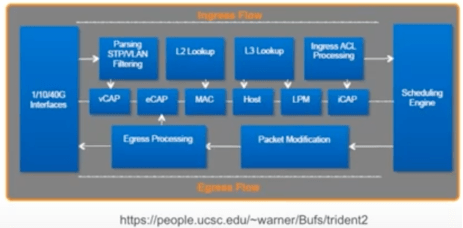
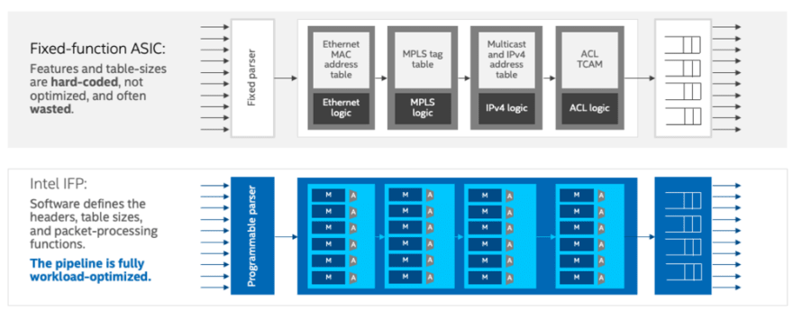
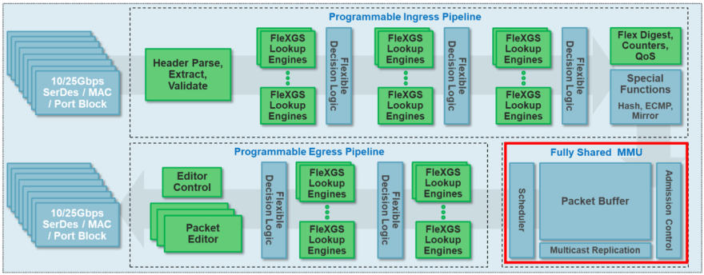
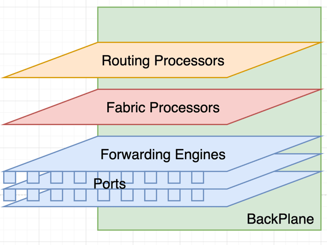
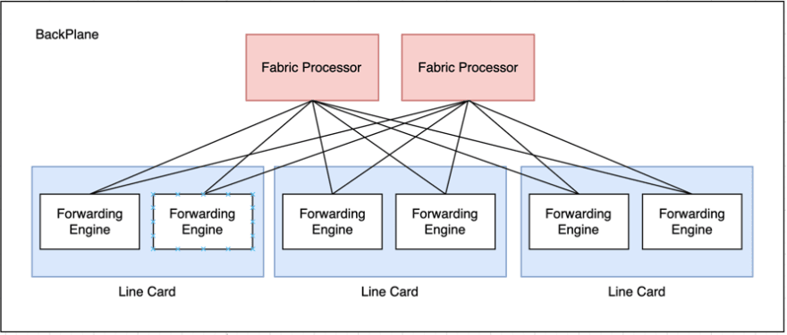
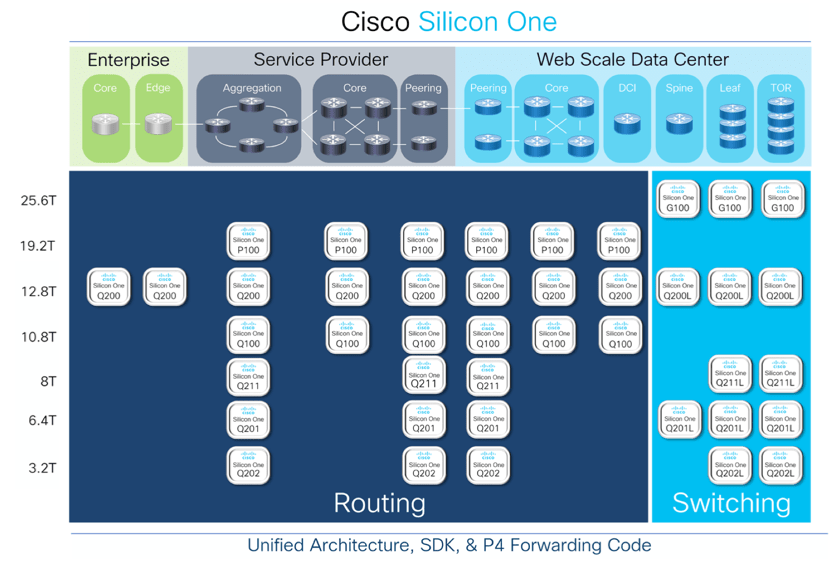
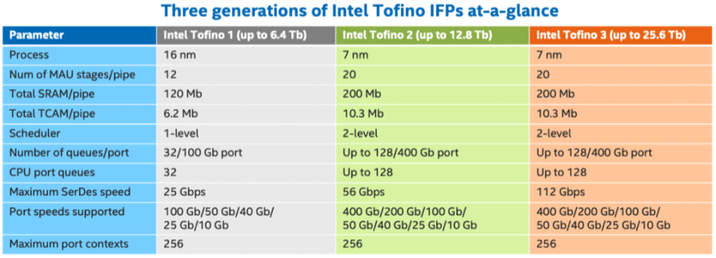

001_networks_0005_understanding_networks_asics_part_1
Intro
For people working in the planning portion of networks , they will face important decision for whether to expand on an exiting chassis they already are running or whether they are going with a new vendor or model, if this is your first time to do that , what are the questions you need to ask yourself or your vendor ?
Depending on the network these chassis are going to be deployed , you need to ask the following :
• Routing vs Switching - Are you going to run a routing L3 protocol , or you just need a Web scale L2 switching ? • Feature Rich vs High Speed - Do you need feature rich such for enterprise edge , or datacenter TOR or backbone service router for example or very fast and lean spine or backbone switching device ? • Deep buffer vs Shallow buffer - Does your network benefit from a Deeper off chip sizable buffer or Shallower faster on-chip buffer ? • Programmable vs Fixed - Are you intending to program the chip yourself/vendor will you just use the chip’s features as hardware allows ? • Advanced vs Basic traffic management - Are you going to implement a legacy basic routing control over traffic , or will you start using intent based controller based routing policies ? • Fixed box vs Modular chassis - Do you need a 1RU box or multi unit expandable modifiable chassis ?
There is a fierce competition in the Ethernet silicon area in different directions, there is the competition between Commercial general purpose silicon and the traditional Merchant silicon providers in the cost , throughput and features areas .
It used to be feature rich against high throughput silicons , but its no longer that simple since the cost of chips now mostly depend on the size of the silicon die (portion of the processor holding the transistors), silicon fabricators already set some standard sizes that processor designer have to adhere to .
Silicon chips used to face a problem with yields because processors comprised of a single die which became more costly each time you increase its size, but lately there has been a direction to break that single piece of silicon to multiple “Chiplets” with cores on a multiple chiplets and IO maybe on another chiplet , these chiplets even used different transistor sizes to optimize the cost against the feature list , so for instance you may have your CPU core made in 7nm process node you can have the IO chiplet made in the 14nm process node size to make it more cost effective , this approach was pioneered by AMD in its EPIC datacenter CPU family , and in the network space it started to appear with Intel’s Tofino 2 family bundling Tofino 2 7nm Cores with , read more about it in Intel Tofino 2 pioneering chiplets design
ASICS Pipelines
Basically ASICs works in a bunch of Pipelines , for instance in a Network ASIC for example , a pipline dictates the way traffic is being processed from the moment it ingresses through a port to egressing through another port :


The parts of the pipeline represents the feature sets , so when a TAC support advises , that a feature is not supported in Hardware , it means that its not implemented in the ASIC’s Pipeline, to give an example some chassis does not support VXLAN forwarding, meaning the ASIC’s pipeline does not feature a part dedicated for VXLAN encapsulation and decapsulation imprinted on the hardware .
Sometimes for vendor instead of redesigning a new ASICs pipline to support a new feature , they would reprogram an existing ASIC and do what is called a recirculation , so you want to add support for VXLAN for instance , you would have to go 1st time through the Pipeline to decapsulate the VXLAN header 1st , then recirculate the traffic second time into the same pipeline but this time for L3 lookup , as these actions was not designed on the ASIC to be supported at the same time , some behavior we used to see with GRE and MPLS , you had to choose only one if you want to pass the pipeline once , if you wanted both then you have to pass the pipeline twice , this of course doubles the latency .
So vendors would go in a Tic Toc cycle of adding feature thus creating a feature rich platform (like Broadcom’s Trident family) , the tic , then optimizing the chip design to process those new features on a faster hardware level (like Broadcom’s Tomahawk family) .
Programmability
Some ASICS , you would have access to the SDK (Example : P4 , OpenFlow or even hardware level Assembly SDK), some are fixed and some are in-between , example for programable networking targeted chips like the Intel Tofino family or Cisco’s latest Silicon One chips that supports P4 programing language.
image source
Ethernet silicon types:
- Merchant Silicons : Some companies develop chips to be used inside Vendor’s products, these are highly specialized Ethernet focused chips that stands in-between general commercial silicons (like general purpose CPUs) and vendor propriety ones , example companies are like Arista, Broadcom ad Mellanox .
- Vendor chips : some huge vendors develop their own chips for their own specialized devices like routers and switches , most famous are Cisco and Juniper .
CPUs vs FPGAs vs ASICS
The difference between the 3 types are features against tradeoffs , CPUs (like x86) provides the most flexibility and programability vs ASICS providing much faster processing speeds and greater bandwidth with the downside of being not programable while that’s true, some of the new ASICs provides and SDK but its very hard to develop for , and mostly these SDKs are used by the Networking vendors instead of the end consumer .
FPGAs are the man in the middle , much faster than CPUs but with more programability than ASICs .
Buffering
There is 2 types of buffers , Shallow on-chip buffer , which is very small , very expensive and then yet very fast , and then there is the second type , the Deep buffer , which can be in the hundreds of Gigabytes , but it would be off-chip and would be much slower , you have both in a Chassis router but each handling a particular scenario .
Following is Pete’s (Pete Lumbis) Opinion on which buffer should handle which type of traffic . A) Deep buffer : should handle long stance transmission , because microsecond congestion on such port would have big impact on RTT of TCP, mostly are measured in Giga Bytes, and mostly off-chip . B) Shallow buffers : everything else , mostly measured in Mega bytes, mostly on-chip.

Shallow Buffer on Trident3 - Broadcom
One of the hardest topics to understand is buffering ,
When is buffer used :
1- When Egree port traffic is larger than Ingress ports - 2 Inputs , 1 output ports , if buffer is full , this would provide Overrun packets . 2- When speed changes , input 100G to output 10G port for example . 3- When you need to Store and Forward . 4- If there is a Burst of traffic that is bigger than th Pipeline speed of processing , depends on the packet header size .
When buffer is not used :
1- Cut through traffic , so traffic coming in and directly being forwarded out with input and output at same speed.
Form Factors
Form factor needs differs from a network addressed to a Cloud provide , hyper scaler , enterprise, or a backbone service provider .
Most Cloud providers and Hyper scalers tends to use a 1RU form factor switches , on the other hand enterprise core switches and service provider’s backbone routers tend to be a large multi-line card chassis, in here we are focusing more on the bigger form factor as it provides many concepts to get familiar with .
Lets take a Juniper MX2020 service router , the same functionality are implemented in many vendors and models but the naming may differ a little bit , but they all tend to provide the same functionality :

Routing Engine
Juniper calls it Routing Engine cards , Cisco calls it Route Processor , these are responsible for handling the Control plane in the legacy way including routing protocols , device management, logging , monitoring, and any functionality besides pure packet forwarding , they establish the peerings, hold the routing tables, apply the route selection derive the RIB and then they translate if into the FIB table that gets cascaded to the Forwarding engines .
They usually have some redundancy features such as ISSU(), Non stop forwarding and so on .
The separation between the Routing engines and the Forwarding plane is useful in case of failure of both redundant Routing Engines , you would lose access to the device and the peering would stop but traffic would still transit through the chassis normally without drops as the Forwarding engines (Ports Cards) would have a copy of the last FIB, the only issue would be that FIB would be outdated .
Forwarding Engine
Refers to the processors on the Line Cards (Ports cards) , a line card may include one or more of these forwarding processors (ASICs), Juniper calls them PFE(Packet Forwarding Engine) , Cisco has multiple names for these such as NPU(Network Processing Unit) , or PSE(Packet Switching Engine) .
These are responsible for packet header manipulation, classification, scheduling, policing, rewrite, replication, filtering, accounting, fine-grained traffic steer‐ ing, mirroring, sampling, unicast and multicast RPF checks, class-based forwarding, and many others.
Fabric Processors
When you have a chassis with multiple line cards, you will mostly find these switch fabrics mediating traffic traversing in-between the Line cards (Forwarding Engines).
Backplane
The chassis connectivity lines between all three Routing Engines, Line Cards and Switch fabrics .
Further

These cards would show connected into the backplane serial but actually the connectivity between these cards are more like a Spine/Leaf topology of a datacenter just compacted into a Chassis form , looks like this logically
ASICS provider
Broadcom
Broadcom has a wide range of ASICs for Networks , we are going to focus on the more relevant ones to our article , there are 2 families : 1- StrataSGX : Mostly Data Center and 1RU form factor , and you have 2 lines :
- Feature rich (More Enterprise) : Trident and Maverick lines of chips .
- High speed (Service Provider) : Tomahawk line of chips . 2- StrataDNX : Deep buffer Chassis chips , they mostly live on line cards :
- Buffers and Medium speed : Aurad, Qumran, Jericho
Cisco
Cisco has lately unveiled their Silicon One family of chips targeted towards all fields including data centers , hyperscalers , enterprises and service providers , currently you can see the Q200 Silicon one chip used in the Cisco 8000 family of routers. Cisco sourced image
Mellanox
mellanox is now a part of Nvidea , there chips are more to be found inside White Boxes rather than vendor chassis . They have only one family for Ethernet chips :
- Spectrum : low latency , feature rich
Intel
In 2019, Intel acquired Barefoot , the maker of the Tofino silicon which is directed towards the Datacenter Fabric market , as of 2022 , they have 3 generations of the Tofino chips family , with P4 programable chips, Intel calls its chips IFPs (Intelligent Fabric Processors), to put it into presepctivet , some Arista (7170 Series) ad Cisco (Nexus 3400 family - Top of rack) Products have already implemented these chips, following is the difference between the 3 generations : Intel Source Page
References :
- what are network ASICS
- White Boxes
- Datacenter ASICs
- inside a carrier Router/Switch
- Network ASICs - Deep Dive (Recommended)
- Intel Tofino brochure
- Chiplets: The First Step To Integrated Silicon Photonics For Faster Interconnects At Lower Cost
- Cisco Silicon One Product Family
- Pete Lumbis Asics for networking engineers